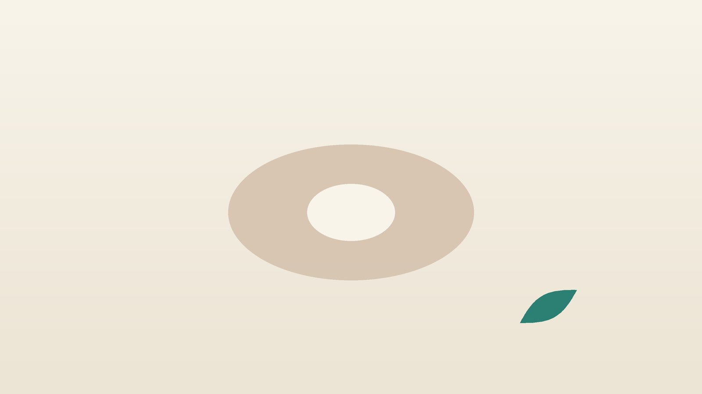

건강 칼럼 · 인천 꼬리뼈통증 한의원
앉을 때 꼬리뼈가 아프다면, 꼬리뼈 통증 한방 관리

나의 꼬리뼈 통증, 이런 모습인가요?
- 의자에 앉으면 엉덩이 가운데 맨 아래쪽이 콕콕 찌르듯 아프다
- 앉았다가 일어나는 순간 통증이 확 올라온다
- 딱딱한 의자나 차 좌석에서 더 아프고 푹신한 곳은 덜하다
- 몸을 뒤로 기대 앉으면 아프고 앞으로 숙이면 편하다
- 엉덩방아를 찧었거나 출산 뒤부터 아프기 시작했다
- 배변할 때나 생리 중에 꼬리뼈 쪽이 더 욱신거린다
이 체크리스트는 진단 도구가 아니라 상담이 필요한지 가늠해 보는 참고용입니다.
꼬리뼈는 왜 아픈가요?
꼬리뼈(미골)는 엉치뼈 아래에 붙은 3~5개의 작은 뼈로, 앉을 때 좌골(엉덩이 양쪽 뼈)과 함께 체중을 나눠 받치고 골반 바닥 근육과 인대가 붙는 자리입니다. 미국 오크스너 저널에 실린 미골통 종설(Lirette 등, 2014)은 가장 흔한 원인으로 넘어지며 엉덩이를 바닥에 찧는 외상, 분만 중 아기가 산도를 지나며 꼬리뼈를 뒤로 밀어내는 압력, 딱딱하거나 좁은 의자에 오래 앉는 반복 자극을 꼽고, 여성에게 약 다섯 배 더 많으며 비만도 위험 요인이라고 정리했습니다.
통증의 바탕에는 꼬리뼈 관절의 과한 흔들림이나 굳음, 인대 염증, 골반 바닥 근육의 긴장이 섞여 있습니다. 같은 종설은 대부분 방석, 자세 교정, 소염진통제 같은 보존 치료로 좋아지며 수술까지 가는 경우는 드물다고 설명합니다.
골절과 종양을 먼저 확인해야 하는 신호
- 크게 넘어진 뒤 꼬리뼈를 누르면 숨이 멎을 듯 아프고 멍이 크게 들었다
- 누워서 쉬어도, 밤에도 통증이 가라앉지 않는다
- 열이 나거나 꼬리뼈 위 피부가 붓고 붉으며 고름이 나온다 (모소낭 등)
- 이유 없이 체중이 줄거나 암을 앓은 적이 있다
- 항문 주변과 엉덩이 안쪽 감각이 둔해지거나 대소변 조절이 어려워졌다
- 배변 습관이 갑자기 바뀌거나 대변에 피가 섞인다
이런 경우에는 정형외과나 신경외과에서 엑스레이, MRI 같은 영상 검사를 먼저 받아 골절이나 탈구, 척삭종 같은 드문 종양, 감염, 신경 압박을 가려야 합니다.
한의학은 꼬리뼈 통증을 어떻게 보나요?
한의학에서는 꼬리뼈 끝을 미려(尾閭)라 불렀고, 몸 뒤쪽 한가운데를 타고 오르는 독맥(督脈)이 이곳에서 시작한다고 보았습니다. 독맥의 첫 혈자리인 장강(長強)이 꼬리뼈 끝 바로 아래에 있어, 꼬리뼈 통증은 허리와 등을 받치는 줄기의 출발점이 상한 것으로 이해할 수 있습니다.
『동의보감』은 허리 통증을 원인별로 나누면서 넘어지거나 삐끗해 생긴 좌섬요통(挫閃腰痛)과 혈이 한곳에 뭉친 어혈요통(瘀血腰痛)을 따로 다루었습니다. 엉덩방아 뒤의 통증은 어혈로, 출산 뒤의 통증은 기혈이 소모된 바탕에 골반이 상한 것으로, 오래 앉아 생긴 통증은 눌린 자리의 기혈이 돌지 못한 것으로 나누어 봅니다.
나는 어떤 유형일까?
1. 어혈(瘀血) 부딪혀 뭉친 유형
- 이런 분에게 많아요
- 빙판·계단에서 엉덩방아를 찧은 분, 교통사고 뒤 아픈 분
- 나타나는 모습
- 한 점을 누르면 찌르듯 아프고 밤에 욱신거린다
- 함께 오는 몸의 신호
- 멍, 앉을 때 날카로운 통증
- 진찰에서 보이는 모습
- 혀가 어둡거나 보랏빛 반점이 있고 맥이 껄끄러움
- 치료 방향
- 뭉친 혈을 풀어 통증을 덜어 내는 방향 (당귀수산 계열)
- 오늘부터 해 볼 것
- 통증 부위를 직접 누르는 자세를 피하고 쐐기 방석을 쓰세요.
2. 산후 기혈허(産後氣血虛) 출산 뒤 지친 유형
- 이런 분에게 많아요
- 분만 뒤 몇 주에서 몇 달 사이에 아프기 시작한 분
- 나타나는 모습
- 수유하려고 앉아 있으면 꼬리뼈와 엉치가 시큰하다
- 함께 오는 몸의 신호
- 피로, 어지럼, 회음부 불편감
- 진찰에서 보이는 모습
- 얼굴빛이 희고 혀 색이 옅으며 맥에 힘이 없음
- 치료 방향
- 소모된 기혈을 채우며 골반 주변을 돕는 방향 (팔진탕 계열)
- 오늘부터 해 볼 것
- 수유 쿠션으로 아기 높이를 맞추고 등을 기대지 않게 앉으세요.
3. 기체(氣滯)·근긴장 오래 앉아 굳은 유형
- 이런 분에게 많아요
- 하루 여덟 시간 넘게 앉아 일하는 직장인·운전 기사
- 나타나는 모습
- 오래 앉을수록 둔하게 아프다가 걸으면 풀린다
- 함께 오는 몸의 신호
- 엉덩이·허벅지 뒤 당김, 골반 바닥 뻐근함
- 진찰에서 보이는 모습
- 엉치와 엉덩이 근육이 단단하고 누르면 아픔
- 치료 방향
- 굳은 근육과 기혈의 흐름을 푸는 방향 (작약감초탕 계열)
- 오늘부터 해 볼 것
- 40분마다 일어나 1~2분 걸으세요.
4. 신허(腎虛) 오래되어 약해진 유형
- 이런 분에게 많아요
- 통증이 수개월 넘게 이어진 분, 중년 이후
- 나타나는 모습
- 시큰하고 힘이 빠지는 듯한 통증이 오래간다
- 함께 오는 몸의 신호
- 허리·무릎이 약함, 찬 곳에서 악화
- 진찰에서 보이는 모습
- 맥이 깊고 약하며 엉치가 차가움
- 치료 방향
- 허리와 골반을 받치는 기운을 북돋는 방향 (독활기생탕 계열)
- 오늘부터 해 볼 것
- 엉치를 따뜻하게 하고 차가운 바닥에 앉지 마세요.
한의원에서는 어떻게 진찰하나요?
- 시작 계기: 넘어짐, 출산, 앉는 시간, 교통사고 여부와 통증이 시작된 시기를 여쭙니다.
- 영상 결과 확인: 엑스레이나 MRI를 찍으셨다면 골절·탈구 여부를 함께 확인하고, 필요하면 검사를 먼저 권합니다.
- 자세별 통증: 앉을 때, 일어설 때, 몸을 숙이거나 젖힐 때 통증이 어떻게 달라지는지 봅니다.
- 촉진·설진·맥진: 꼬리뼈 끝과 엉치, 엉덩이 근육의 압통과 긴장을 살피고 혀와 맥으로 유형을 판단합니다.
침·약침·추나·한약 치료는 어떻게 하나요?
1. 침 치료
- 장강(長強): 꼬리뼈 끝과 항문 사이. 독맥이 시작되는 자리로 꼬리뼈 통증의 중심 혈입니다.
- 차료(次髎)·하료(下髎): 엉치뼈의 두 번째·네 번째 구멍 자리. 골반 바닥의 긴장을 풉니다.
- 위중(委中): 무릎 뒤 오금 한가운데. 허리와 엉치 통증에 함께 씁니다.
- 후계(後谿): 주먹을 쥐었을 때 새끼손가락 쪽 손바닥 가로금 끝. 독맥과 통하는 혈로 멀리서 통증을 다스립니다.
임신 중이거나 출산 직후라면 꼭 말씀해 주세요. 임신 중에는 합곡, 삼음교와 허리·엉치·아랫배의 혈자리 자극을 피하고, 손과 다리의 다른 혈을 골라 치료합니다.
2. 약침·초음파 가이드 약침과 추나 요법
약침은 일반 약침과 초음파 가이드 약침을 모두 시행하며, 아픈 부위의 깊이와 주변 구조에 따라 진찰 후 골라 씁니다. 초음파 가이드 약침은 초음파 화면으로 바늘 끝을 확인하면서 놓는 방식입니다. 꼬리뼈 주변 인대와 근육을 초음파로 살펴 압통의 원인 부위를 찾은 뒤 약침을 놓습니다. 꼬리뼈 둘레와 엉치, 엉덩이 근육에서 누르면 아픈 자리에 약침을 놓아 뭉친 조직을 풀어 줍니다. 골반의 기울어짐이나 엉치 관절의 움직임 제한이 함께 보이면 추나 요법을 시행하며, 엉치가 차고 시린 분은 온열 요법을 더합니다. 차량 사고 뒤 시작된 꼬리뼈 통증은 자동차보험 진료가 가능합니다.
3. 한약
다친 지 얼마 안 되었을 때는 뭉친 혈을 푸는 탕약을, 출산 뒤나 오래된 통증에는 기혈과 허리 힘을 채우는 탕약을 중심으로 씁니다. 수유 중이거나 진통제·혈액 묽게 하는 약을 드신다면 알려 주시면 확인해 처방합니다.
원장님이 네이버 블로그에 진료 이야기와 건강 정보를 꾸준히 올리고 있습니다. 더 많은 이야기는 블로그에서 확인해 보세요.
블로그 보기치료는 어떤 순서로 진행되나요?
- 첫 진료 골절이나 다른 질환의 신호가 없는지 확인하고, 앉는 시간과 통증 점수를 기록합니다.
- 1~3주 주 2~3회 침 치료와 약침으로 앉을 때의 날카로운 통증부터 줄이고, 방석과 앉는 법을 바로잡습니다.
- 4~6주 통증 점수를 비교해 추나 요법과 탕약의 비중을 조절합니다.
- 마무리 오래 앉아도 버틸 수 있으면 치료 간격을 넓히고 엉덩이·골반 스트레칭을 생활 습관으로 남깁니다.
갓 다친 통증은 몇 주 안에 가라앉는 경우가 많고, 몇 달 된 통증은 회복에 더 시간이 걸릴 수 있어 진찰 후 기간을 안내합니다.
꼬리뼈를 덜 아프게 앉는 법
- 방석 고르기: 가운데가 뚫린 도넛 방석도 쓰지만, 꼬리뼈가 닿는 뒤쪽이 U자로 파인 쐐기형 방석이 꼬리뼈를 바닥에서 띄우는 데 더 유리한 경우가 많습니다.
- 앉는 자세: 엉덩이를 의자 깊숙이 넣고 몸을 살짝 앞으로 숙여 체중을 좌골에 싣습니다. 뒤로 기대 미끄러지듯 앉는 자세는 꼬리뼈를 직접 누릅니다.
- 일어설 때: 한 손으로 책상을 짚고 엉덩이를 들기 전에 몸을 먼저 앞으로 기울이세요.
- 변비 관리: 배변 때 힘을 오래 주면 꼬리뼈 주변이 더 아파 물과 채소를 충분히 드세요.
- 혈자리 지압: 후계를 엄지로 10초씩 지그시 누르기를 몇 차례 하면 앉아 있는 동안 긴장을 덜 수 있습니다.
다른 진료가 함께 필요한 경우
- 넘어진 직후 통증이 매우 심하면 엑스레이로 골절과 탈구부터 확인하세요.
- 꼬리뼈 위 피부가 붓고 고름이 나오면 외과 진료가 필요합니다.
- 대소변 조절이 어려워지면 바로 응급실로 가세요.
- 몇 달이 지나도 앉기가 힘들다면 재활의학과에서 주사 치료를 상담할 수 있습니다.
자주 묻는 질문 Q&A
- Q1. 엉덩방아 찧고 한 달이 지났는데 계속 아파요.
- 타박만 있었다면 몇 주 안에 가라앉는 경우가 많습니다. 한 달이 넘도록 앉기 힘들다면 골절이나 관절 이상을 확인하는 영상 검사를 먼저 받아 보세요.
- Q2. 도넛 방석과 쐐기 방석 중 무엇이 나을까요?
- 도넛 방석은 꼬리뼈가 구멍 뒤쪽 테두리에 닿을 수 있어, 뒤가 파인 쐐기 방석이 더 편한 분이 많습니다. 직접 앉아 보고 통증이 덜한 쪽을 고르세요.
- Q3. 출산 뒤 꼬리뼈가 아파 수유가 힘들어요.
- 수유 자세를 옆으로 눕는 자세로 바꾸고 쐐기 방석을 써 보세요. 수유 중이라고 알려 주시면 그에 맞는 약재로 탕약을 처방합니다.
- Q4. 꼬리뼈 통증도 교통사고 치료로 받을 수 있나요?
- 차량 사고 뒤 생긴 통증이라면 자동차보험으로 진료받을 수 있습니다. 접수 번호를 준비해 오시면 됩니다.
- Q5. 꼬리뼈에 침을 놓으면 아프지 않나요?
- 꼬리뼈 바로 아래 혈은 예민한 자리라 얕고 가늘게 놓으며, 불편하시면 엉치와 손발의 혈로 대신합니다.
- Q6. 임신 중인데 꼬리뼈가 아파요.
- 임신 중에는 피해야 할 혈자리를 제외하고 치료합니다. 한약이 필요하면 임신 주수를 진료 때 알려 주세요. 확인 후 안전한 약재로 처방합니다.
- Q7. 오래 앉아 공부해야 하는 학생도 생기나요?
- 네, 딱딱한 의자에 장시간 앉는 학생과 직장인에게도 생깁니다. 40분마다 일어나 걷는 습관이 가장 중요합니다.
- Q8. 수술이 필요한 경우도 있나요?
- 보존 치료로 대부분 좋아지며, 오랜 기간 치료해도 앉지 못할 만큼 아픈 드문 경우에 꼬리뼈 절제술을 상담합니다.
문원열 대표원장한의사 · 365스마일한의원
인천 서구 가정동 한자리에서 10년 넘게 진료하며, 환자 한 분 한 분의 아픔을 깊이 들여다보고 근본적인 원인을 찾는 진료를 지향합니다.
진료 안내
- 진료시간
- 평일 09:00~20:00 (점심시간 13:00~14:00)
토·일·공휴일 09:00~15:00 - 주소
- 인천광역시 서구 가경주로 46, 2층 (가정동)
인천2호선 가정중앙시장역 인근
영상으로 길 안내 보기 → - 주차
- 한의원 건물 바로 앞 1층 도원주차장
- 예약
- 예약 바로가기 또는 전화 예약
진료시간은 사정에 따라 바뀔 수 있으니 방문 전 전화로 확인해 주세요.
함께 읽으면 좋은 칼럼
건강 칼럼 전체 보기 →


참고 자료
- Lirette LS, Chaiban G, Tolba R, Eissa H. Coccydynia: An Overview of the Anatomy, Etiology, and Treatment of Coccyx Pain. The Ochsner Journal, 2014;14(1):84-87
- 허준, 『동의보감(東醫寶鑑)』 외형편(外形篇) 요(腰), 좌섬요통·어혈요통
- 질병관리청 국가건강정보포털 — 원문
※ 이 글은 일반적인 건강 정보이며, 개인의 상태에 따라 치료 방법과 결과는 다를 수 있습니다. 정확한 진단과 치료는 진료를 통해 결정됩니다. 침·약침 시술 후 드물게 멍, 통증 등이 생길 수 있습니다.